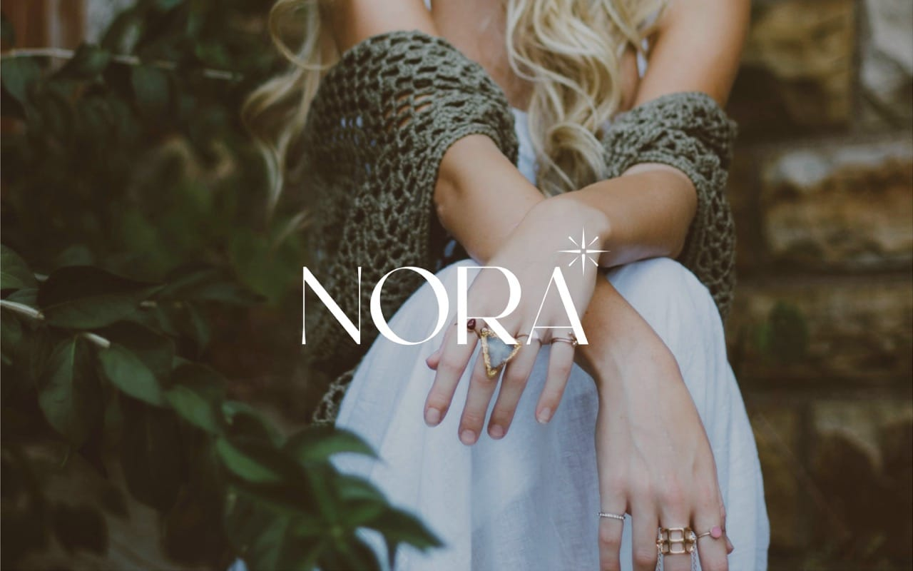
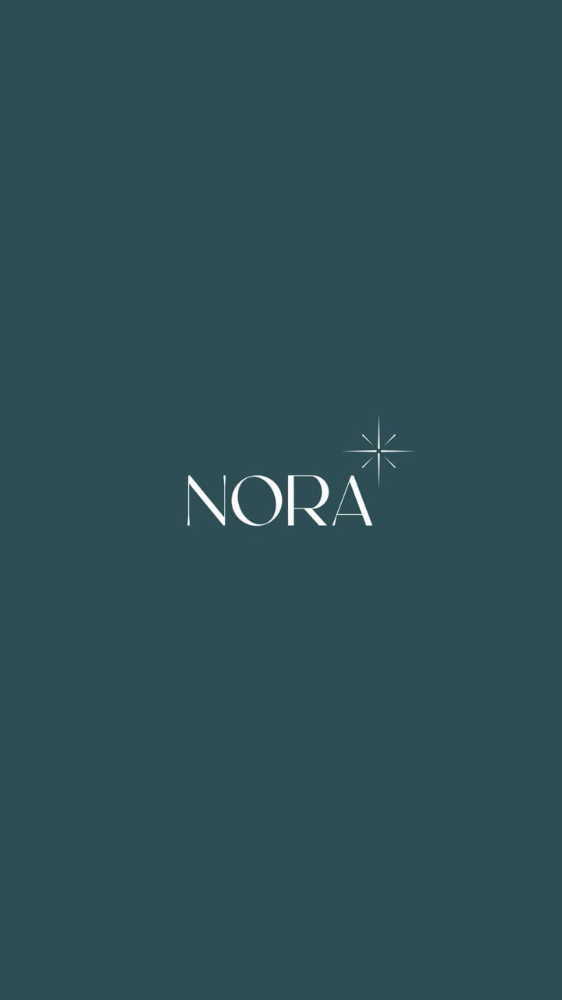
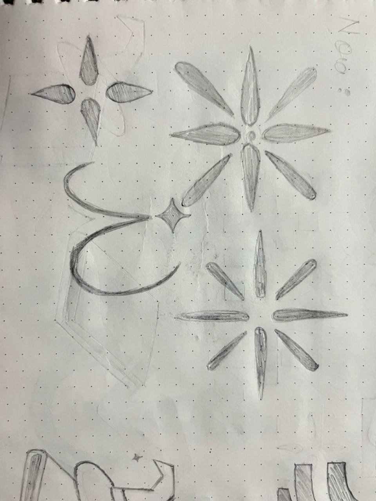
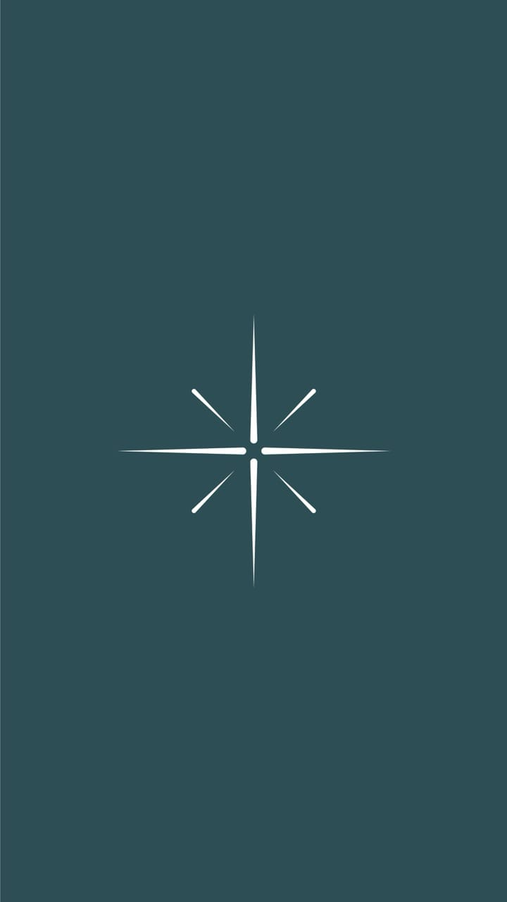
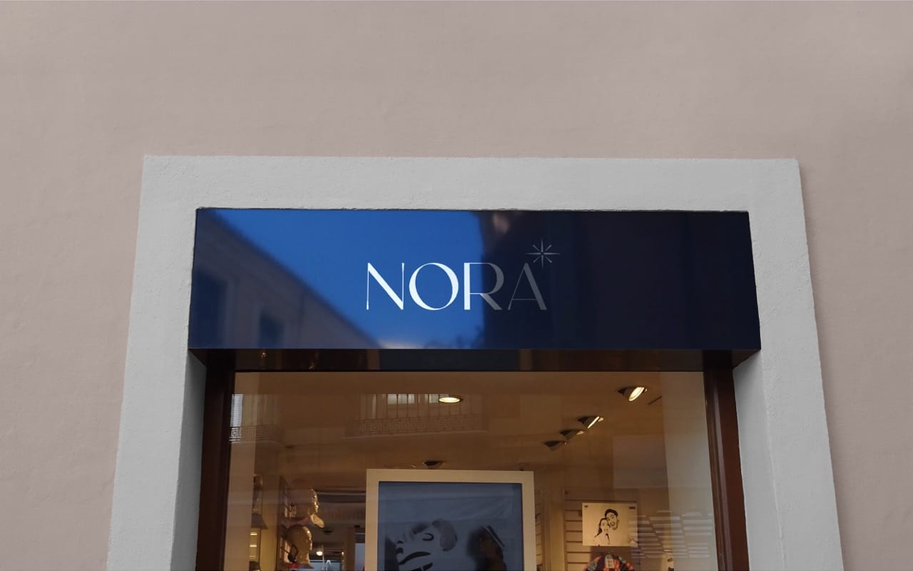
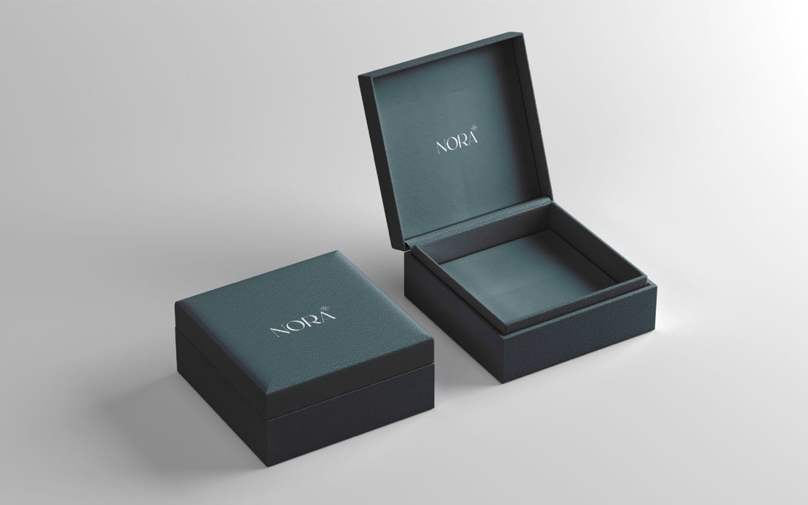

A serif wordmark and star motif that give Nora one luxury identity across packaging, storefronts, and social.
Nora is a premium jewelry brand that needed a cohesive visual identity for its retail and digital touchpoints. I designed a classic serif wordmark with an integrated star motif and an emerald-and-white palette, then extended it into a full brand asset toolkit for packaging, signage, and social media.

The brief: one identity for retail and digital
Nora is a premium jewelry brand celebrated for its timeless elegance and refined craftsmanship. With both a retail and a digital presence, it needed a visual identity that would resonate across touchpoints, from store signage to jewelry boxes. The objective was a logo that captures luxury, sophistication, and individuality while adapting seamlessly across platforms. The mark had to embody elegance, purity, and premium craftsmanship, build an emotional connection, and stay memorable across digital, print, and packaging.


The design: serif wordmark, star motif, emerald and white
The identity pairs a classic serif typeface with elegant strokes to evoke heritage and sophistication. A delicate star motif sits at the top-right of the wordmark, symbolizing brilliance, aspiration, and attention to detail. The palette is emerald green for prosperity and white for purity, a timeless, premium pairing, held together with generous spacing and a consistent system for color ratios, hierarchy, and white space. Layout variations were explored so the mark feels at home on both high-end packaging and modern digital screens.


The process: discovery to a full asset toolkit
Work moved through five stages. Brand discovery used strategy workshops to align on an elegant, aspirational, and timeless tone and to map core values of purity, brilliance, craftsmanship, and confidence. Symbol exploration developed the custom serif wordmark and delicate star icon across horizontal, vertical, and stacked layouts. Color and typography locked the emerald-and-white system and serif type. Application design tested the identity on jewelry boxes, paper bags, store signage, gift cards, thank-you notes, digital ads, website banners, and Instagram posts, with foil stamping compatibility and legibility checked at large and small sizes. Final delivery included logo variants (primary, secondary, icon-only) in SVG, EPS, PNG, and PDF, a style guide covering usage, spacing, color specs, and do's and don'ts, color and typography guidelines, and visual mockups for packaging, social media, and marketing. Tools used were After Effects and Photoshop.
